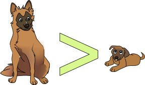
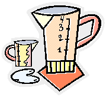

Equal, Greater or Less Than
As well as the familiar equals sign (=) it is also very useful to show if something is not equal to (≠) greater than (>) or less than (<)
These are the important signs to know:
| = |
When two values are equal |
example: 2+2 = 4 |
| ≠ |
When two values are definitely not equal |
example: 2+2 ≠ 9 |
| < |
When one value is smaller than another |
example: 3 < 5 |
| > |
When one value is bigger than another |
example: 9 > 6 |

Less Than and Greater Than
The "less than" sign and the "greater than" sign look like a "V" on its side, don't they?
To remember which way around the "<" and ">" signs go, just remember:
- BIG > small
- small < BIG

Greater Than Symbol: BIG > small
Example:
10 > 5
"10 is greater than 5"
Or the other way around:
5 < 10
"5 is less than 10"
Do you see how the symbol "points at" the smaller value?
... Or Equal To ...
Sometimes we know a value is smaller, but may also be equal to!

Example, a jug can hold up to 4 cups of water.
So how much water is in it?
It could be 4 cups or it could be less than 4 cups: So until we measure it, all we can say is "less than or equal to" 4 cups.
To show this, we add an extra line at the bottom of the "less than" or "greater than" symbol like this:
|
The "less than or equal to" sign: |
≤ | |
|
The "greater than or equal to" sign: |
≥ |
All The Symbols
Here is a summary of all the symbols:
|
Symbol |
Words |
Example Use |
|---|---|---|
|
= |
equals |
1 + 1 = 2 |
|
≠ |
not equal to |
1 + 1 ≠ 1 |
|
> |
greater than |
5 > 2 |
|
< |
less than |
7 < 9 |
|
≥ |
greater than or equal to |
marbles ≥ 1 |
|
≤ |
less than or equal to |
dogs ≤ 3 |
Why Use Them?
Because there are things we do not know exactly ...
So we have ways of saying what we do know (which may be useful!)
Example: John had 10 marbles, but lost some. How many has he now?
Answer: He must have less than 10:
Marbles < 10
If John still has some marbles we can also say he has greater than zero marbles:
Marbles > 0
But if we thought John could have lost all his marbles we would say
Marbles ≥ 0
In other words, the number of marbles is greater than or equal to zero.
Combining
We can sometimes say two (or more) things on the one line:
Example: Becky starts with $10, buys something and says "I got change, too". How much did she spend?
Answer: Something greater than $0 and less than $10 (but NOT $0 or $10):
"What Becky Spends" > $0
"What Becky Spends" < $10
This can be written down in just one line:
$0 < "What Becky Spends" < $10
That says that $0 is less than "What Becky Spends" (in other words "What Becky Spends" is greater than $0) and what Becky Spends is also less than $10.
Notice that ">" was flipped over to "<" when we put it before what Becky spends. Always make sure the small end points to the small value.
Changing Sides
We saw in that previous example that when we change sides we flipped the symbol as well.
| This: | Becky Spends > $0 | (Becky spends greater than $0) | ||
| is the same as this: | $0 < Becky Spends | ($0 is less than what Becky spends) |
Just make sure the small end points to the small value!
Here is another example using "≥" and "≤":
Example: Becky has $10 and she is going shopping. How much will she spend (without using credit)?
Answer: Something greater than, or possibly equal to, $0 and less than, or possibly equal to, $10:
Becky Spends ≥ $0
Becky Spends ≤ $10
This can be written down in just one line:
$0 ≤ Becky Spends ≤ $10
A Long Example: Cutting Rope
Here is an interesting example I thought of:
Example: Sam cuts a 10m rope into two. How long is the longer piece? How long is the shorter piece?
Answer: Let us call the longer length of rope "L", and the shorter length "S"
L must be greater than 0m (otherwise it isn't a piece of rope), and also less than 10m:
L > 0
L < 10
So:
0 < L < 10
That says that L (the Longer length of rope) is between 0 and 10 (but not 0 or 10)
The same thing can be said about the shorter length "S":
0 < S < 10
But I did say there was a "shorter" and "longer" length, so we also know:
S < L
(Do you see how neat mathematics is? Instead of saying "the shorter length is less than the longer length", we can just write "S < L")
We can combine all of that like this:
0 < S < L < 10
That says a lot:
0 is less that the short length, the short length is less than the long length, the long length is less than 10.
Reading "backwards" we can also see:
10 is greater than the long length, the long length is greater than the short length, the short length is greater than 0.
It also lets us see that "S" is less than 10 (by "jumping over" the "L"), and even that 0<10 (which we know anyway), all in one statement.
NOW, I have one more trick. If Sam tried really hard he might be able to cut the rope EXACTLY in half, so each half is 5m, but we know he didn't because we said there was a "shorter" and "longer" length, so we also know:
S<5
and
L>5
We can put that into our very neat statement here:
0 < S < 5 < L < 10
And IF we thought the two lengths MIGHT be exactly 5 we could change that to
0 < S ≤ 5 ≤ L < 10
An Example Using Algebra
OK, this example may be complicated if you don't know Algebra, but I thought you might like to see it anyway:
Example: What is x+3, when we know that x is greater than 11?
If x > 11 , then x+3 > 14
(Imagine that "x" is the number of people at your party. If there are more than 11 people at your party, and 3 more arrive, then there must be more than 14 people at your party now.)